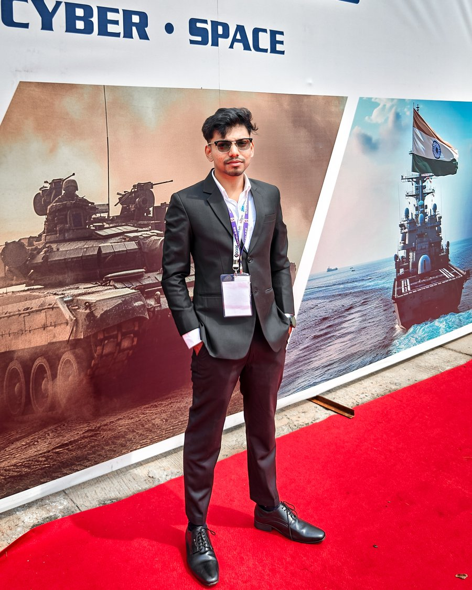
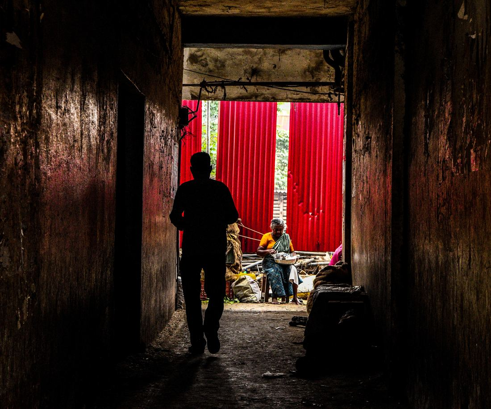
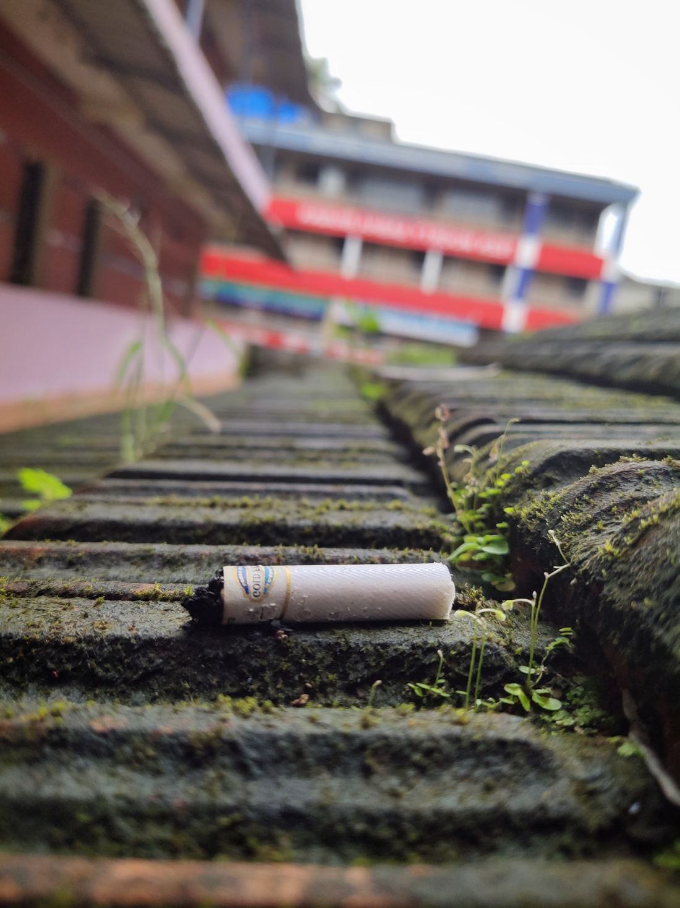

A MISSION IN EIGHT ACTS
ANANTHU DEV D V
PROJECT ENGINEER — AEROSPACE & DEFENCE
FLIGHT SOFTWARE · GNC · EMBEDDED SYSTEMS · SIMULATION
ACT I // OPERATOR PROFILE
THE OPERATOR

I build mission-critical onboard software for precision-guided aerospace and defence systems — flight software sequencing, Guidance, Navigation & Control, embedded real-time execution, simulation and verification. I enjoy turning algorithms and system architectures into dependable real-world flight code.
- C / C++ FLIGHT CODE
- GNC GUIDANCE · NAV · CONTROL
- MIL / HIL SIM & INTEGRATION
- V&V MISSION ASSURANCE
ACT II // FLIGHT SOFTWARE
ONBOARD FLIGHT SOFTWARE & SEQUENCER
I develop onboard flight software in C for precision-guided projectile defence systems — embedded execution, real-time behaviour, mission-critical reliability. I designed, architected and implemented the Flight Software Sequencer: mission sequencing, subsystem coordination, execution flow and state-transition management, from power-on to end of mission.
- Mission sequencing & state-transition management
- Subsystem coordination and execution-flow control
- Embedded deployment · real-time execution frameworks
- Architecture documents & technical flowcharts
ACT III // GUIDANCE · NAVIGATION · CONTROL
FROM ALGORITHM TO FLIGHT CODE
I developed the software architecture for onboard Guidance — translating algorithmic models into operational flight software modules and designing their execution frameworks for embedded deployment. I integrated GNC subsystems into the overall flight software architecture and supported system-level verification, validation and hardware integration.
- Guidance algorithm → operational flight software
- GNC subsystem integration into flight architecture
- Execution frameworks for embedded targets
- Pursuit geometry shown is generic & illustrative
ACT IV // INTEGRATION & V&V
VERIFIED UNDER FIRE
Flight software only counts when it survives contact with hardware. I participate in software debugging, telemetry analysis, hardware integration, milestone reviews and end-to-end testing — plus the architecture documents, validation reports and engineering documentation that keep a mission-critical program auditable.
- MODEL
- MIL
- SIL
- HIL
- FLIGHT TEST
- Software integration, verification & validation
- Hardware-in-loop testing & debugging
- Cross-discipline work: Guidance, Nav, Control, SW, HW
ACT V // AEROSPACE SIMULATION
ORBITS, TRAJECTORIES & MODEL-IN-THE-LOOP
I have contributed to satellite mission simulation and Model-in-the-Loop development — orbit determination, numerical propagation, reference-frame transformations, simulation framework development, automated testing and system-level validation for space applications.
Previously I led development of ASTRA GUI, a mission-planning and trajectory-optimization platform built with Electron.js on a high-performance C++ simulation backend.
- Orbit determination · propagation · frame transforms
- MIL simulation frameworks & automated testing
- Trajectory optimization tooling (Electron.js + C++)
ACT VI // ENGINEERING TOOLS & TELEMETRY
TOOLS THAT MAKE TESTING FASTER
Beyond flight code, I build Python applications for sensor-data verification, telemetry analysis and subsystem validation — letting engineering teams analyse hardware performance and flight-test data quickly instead of wrestling with raw logs.
- Sensor-data verification & telemetry apps (Python / Tkinter)
- Subsystem validation & flight-test data workflows
ACT VII // ARSENAL & STACK
LANGUAGES & SYSTEMS
Generic, illustrative airframes · drag to rotate the bays.
ACT VIII // COMMS
ESTABLISH UPLINK
Open to conversations about flight software, GNC, simulation and defence technology.
STATION: TRIVANDRUM · KERALA · INDIA
MISSION STILLS — OFF-DUTY OPTICS



